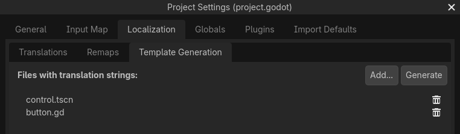

Localization using gettext (PO files)
In addition to importing translations in
CSV format, Godot also
supports loading translation files written in the GNU gettext format
(text-based .po and compiled .mo).
Note
For an introduction to gettext, check out
A Quick Gettext Tutorial.
It's written with C projects in mind, but much of the advice
also applies to Godot (with the exception of xgettext).
For the complete documentation, see GNU Gettext.
Advantages
gettext is a standard format, which can be edited using any text editor or GUI editors such as Poedit. This can be significant as it provides a lot of tools for translators, such as marking outdated strings, finding strings that haven't been translated, etc.
gettext is supported by translation platforms such as Transifex and Weblate, which makes it easier for people to collaborate to localization.
Compared to CSV, gettext files work better with version control systems like Git, as each locale has its own messages file.
Multiline strings are more convenient to edit in gettext PO files compared to CSV files.
Disadvantages
gettext PO files have a more complex format than CSV and can be harder to grasp for people new to software localization.
People who maintain localization files will have to install gettext tools on their system. However, as Godot supports using text-based message files (
.po), translators can test their work without having to install gettext tools.gettext PO files usually use English as the base language. Translators will use this base language to translate to other languages. You could still use other languages as the base language, but this is not common.
Installing gettext tools
The command line gettext tools are required to perform maintenance operations, such as updating message files. Therefore, it's strongly recommended to install them.
Windows: Download an installer from this page. Any architecture and binary type (shared or static) works; if in doubt, choose the 64-bit static installer.
macOS: Install gettext either using Homebrew with the
brew install gettextcommand, or using MacPorts with thesudo port install gettextcommand.Linux: On most distributions, install the
gettextpackage from your distribution's package manager.
For a GUI tool you can get Poedit from its Official website. The basic version is open source and available under the MIT license.
Creating the PO template
Automatic generation using the editor
The editor can generate a PO template automatically from
specified scene and GDScript files. This POT generation also supports translation
contexts and pluralization if used in a script, with the optional second
argument of tr() and the tr_n() method.
Open , then use the button to specify the path to your project's scenes and scripts that contain localizable strings:

Creating a PO template in the tab of the Project Settings
After adding at least one scene or script, click in the
top-right corner, then specify the path to the output file with a pot file extension. This file can be
placed anywhere in the project directory, but it's recommended to keep it in a
subdirectory such as locale, as each locale will be defined in its own file.
See below for how to add comments for translators or exclude some strings from being added to the PO template for GDScript files.
You can then move over to creating a messages file from a PO template.
Note
Remember to regenerate the PO template after making any changes to localizable strings, or after adding new scenes or scripts. Otherwise, newly added strings will not be localizable and translators won't be able to update translations for outdated strings.
Manual creation
If the automatic generation approach doesn't work out for your needs, you can create a PO template by hand in a text editor. This file can be placed anywhere in the project directory, but it's recommended to keep it in a subdirectory, as each locale will be defined in its own file.
Create a directory named locale in the project directory. In this directory,
save a file named messages.pot with the following content:
# Don't remove the two lines below, they're required for gettext to work correctly.
msgid ""
msgstr ""
# Example of a regular string.
msgid "Hello world!"
msgstr ""
# Example of a string with pluralization.
msgid "There is %d apple."
msgid_plural "There are %d apples."
msgstr[0] ""
msgstr[1] ""
# Example of a string with a translation context.
msgctxt "Actions"
msgid "Close"
msgstr ""
Messages in gettext are made of msgid and msgstr pairs.
msgid is the source string (usually in English), msgstr will be
the translated string.
Warning
The msgstr value in PO template files (.pot) should always be
empty. Localization will be done in the generated .po files instead.
Creating a messages file from a PO template
The msginit command is used to turn a PO template into a messages file.
For instance, to create a French localization file, use the following command
while in the locale directory:
msginit --no-translator --input=messages.pot --locale=fr
The command above will create a file named fr.po in the same directory
as the PO template.
Alternatively, you can do that graphically using Poedit, or by uploading the POT file to your web platform of choice.
Loading a messages file in Godot
To register a messages file as a translation in a project, open the
Project Settings, then go to ,
click then choose the .po or .mo file
in the file dialog. The locale will be inferred from the
"Language: <code>\n" property in the messages file.
Note
See Internationalizing games for more information on importing and testing translations in Godot.
Updating message files to follow the PO template
After updating the PO template, you will have to update message files so
that they contain new strings, while removing strings that are no longer
present in the PO template. This can be done automatically using the
msgmerge tool:
# The order matters: specify the message file *then* the PO template!
msgmerge --update --backup=none fr.po messages.pot
If you want to keep a backup of the original message file (which would be
saved as fr.po~ in this example), remove the --backup=none argument.
Note
After running msgmerge, strings which were modified in the source language
will have a "fuzzy" comment added before them in the .po file. This comment
denotes that the translation should be updated to match the new source string,
as the translation will most likely be inaccurate until it's updated.
Strings with "fuzzy" comments will not be read by Godot until the translation is updated and the "fuzzy" comment is removed.
Checking the validity of a PO file or template
It is possible to check whether a gettext file's syntax is valid.
If you open with Poeditor, it will display the appropriate warnings if there's some syntax errors. You can also verify by running the gettext command below:
msgfmt fr.po --check
If there are syntax errors or warnings, they will be displayed in the console.
Otherwise, msgfmt won't output anything.
Using binary MO files (useful for large projects only)
For large projects with several thousands of strings to translate or more, it can be worth it to use binary (compiled) MO message files instead of text-based PO files. Binary MO files are smaller and faster to read than the equivalent PO files.
You can generate an MO file with the command below:
msgfmt fr.po --no-hash -o fr.mo
If the PO file is valid, this command will create an fr.mo file besides
the PO file. This MO file can then be loaded in Godot as described above.
The original PO file should be kept in version control so you can update your translation in the future. In case you lose the original PO file and wish to decompile an MO file into a text-based PO file, you can do so with:
msgunfmt fr.mo > fr.po
The decompiled file will not include comments or fuzzy strings, as these are never compiled in the MO file in the first place.
Extracting localizable strings from GDScript files
The built-in editor plugin recognizes a variety of patterns in source code to extract localizable strings from GDScript files, including but not limited to the following:
tr(),tr_n(),atr(), andatr_n()calls;assigning properties
text,placeholder_text, andtooltip_text;add_tab(),add_item(),set_tab_title(), and other calls;FileDialogfilters like"*.png ; PNG Images".
Note
The argument or right operand must be a constant string, otherwise the plugin will not be able to evaluate the expression and will ignore it.
If the plugin extracts unnecessary strings, you can ignore them with the NO_TRANSLATE comment.
You can also provide additional information for translators using the TRANSLATORS: comment.
These comments must be placed either on the same line as the recognized pattern or precede it.
$CharacterName.text = "???" # NO_TRANSLATE
# NO_TRANSLATE: Language name.
$TabContainer.set_tab_title(0, "Python")
item.text = "Tool" # TRANSLATORS: Up to 10 characters.
# TRANSLATORS: This is a reference to Lewis Carroll's poem "Jabberwocky",
# make sure to keep this as it is important to the plot.
say(tr("He took his vorpal sword in hand. The end?"))
Using context
The context parameter can be used to differentiate the situation where a translation
is used, or to differentiate polysemic words (words with multiple meanings).
For example:
tr("Start", "Main Menu")
tr("End", "Main Menu")
tr("Shop", "Main Menu")
tr("Shop", "In Game")
In a gettext PO file, a string with a context can be defined as follows:
# Example of a string with a translation context.
msgctxt "Main Menu"
msgid "Shop"
msgstr ""
# A different source string that is identical, but with a different context.
msgctxt "In Game"
msgid "Shop"
msgstr ""
Updating PO files
Some time or later, you'll add new content to your game, and there will be new strings that need to be translated. When this happens, you'll need to update the existing PO files to include the new strings.
First, generate a new POT file containing all the existing strings plus the newly added strings. After that, merge the existing PO files with the new POT file. There are two ways to do this:
Use a gettext editor, and it should have an option to update a PO file from a POT file.
Use the gettext
msgmergetool:
# The order matters: specify the message file *then* the PO template!
msgmerge --update --backup=none fr.po messages.pot
If you want to keep a backup of the original message file (which would be saved
as fr.po~ in this example), remove the --backup=none argument.
POT generation custom plugin
If you have any extra file format to deal with, you could write a custom plugin to parse and extract the strings from the custom file. This custom plugin will extract the strings and write into the POT file when you hit Generate POT. To learn more about how to create the translation parser plugin, see EditorTranslationParserPlugin.